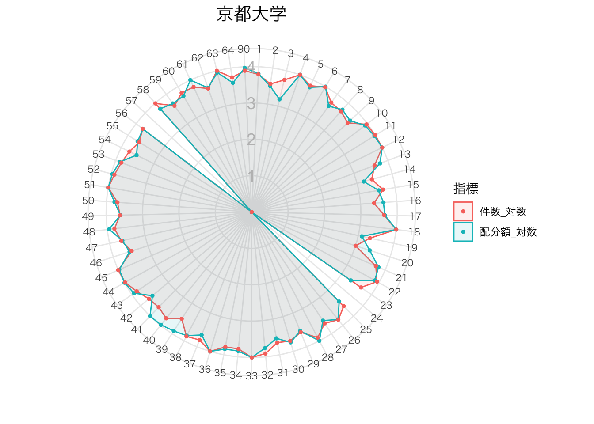
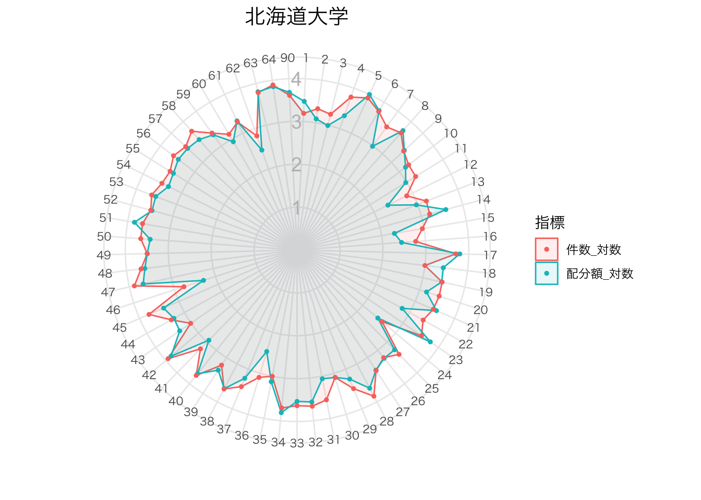

【KAKEN】データの可視化（８）
ー条件を変えてグラフを繰り返し描画ー
Takuya Kubo, 2020/05/21
０. はじめに
前回は調（2018）を参考に、各機関の審査区分ごとの配分額をレーダーチャートで可視化する方法を紹介いたしました。しかし、前回までのコードでは複数のレーダーチャートを書く際にコピー＆ペースト繰り返さないといけないという課題が残りました。そこで、今回はtidyrパッケージのnest関数とpurrrパッケージのmap関数を用いて、全ての研究機関のレーダーチャートを繰り返し描画するためのコードを紹介していきます。なお、レーダーチャートを描画する方法については今回簡略化しますので、詳しくは前回の記事をご参照ください。
１. 環境設定
必要なパッケージとデータは以下の通りです。
# インストールされていない場合は、以下のコマンドの「#」を外して実行
# install.packages("data.table")
# install.packages("dplyr")
# install.packages("DT")
# install.packages("ggplot2")
# install.packages("tidyr")
# install.packages("purrr")
# パッケージの読み込み
library(data.table) # 高速なデータインポートのため
library(dplyr) # データの整理のため
library(DT) # 集計表の出力のため
library(stringr) # 文字列操作のため
library(ggplot2) # グラフ化のため
library(tidyr) # データの縦持ち/横持ち変換、データフレームをネストするため
library(purrr) # 繰り返し処理のため
# 科研費採択課題データ
d <- fread("kaken_2020.csv", select = c("研究機関", "研究種目", "審査区分", "総配分額"))
# 科研費審査区分一覧表
kubun <- fread("kaken_kubun.csv", colClasses = list(character = c("小区分コード", "中区分コード")))レーダーチャートの描画までに必要なデータの処理を行います。前回との変更点としましては、研究機関ごとの配分額だけでなく、採択件数も合わせてレーダーチャートを書いていきます。また、データ量が多いので、対数変換＋正規化が終わった後に研究機関を旧帝大に限定しておきます。
# 小区分と中区分の対応表
to_medium <- kubun %>%
select(小区分コード, 中区分コード) %>%
unique()
D1 <- d %>%
# データのフィルター
filter(研究種目 %in% c("基盤研究(A)", "基盤研究(B)", "基盤研究(C)", "若手研究")) %>%
# 小区分⇨中区分変換
mutate(小区分コード = str_extract(審査区分, "\\d{5}")) %>%
left_join(to_medium) %>%
mutate(中区分コード = ifelse(研究種目 == "基盤研究(A)", str_extract(審査区分, "\\d+"), 中区分コード)) %>%
# 配分額と採択件数を集計し、常用対数変換＋正規化
group_by(研究機関, 中区分コード) %>%
summarize(配分額 = sum(総配分額), 件数 = n()) %>%
group_by(中区分コード) %>%
mutate(配分額_対数 = round(log10(配分額)-max(log10(配分額)-4), 2)) %>%
mutate(件数_対数 = round(log10(件数)-max(log10(件数)-4), 2)) %>%
select(-配分額, -件数) %>%
# 全ての中区分コードに対して、該当する値がない場合に0を代入
pivot_longer(cols = -c(研究機関, 中区分コード), names_to = "指標", values_to = "値") %>%
pivot_wider(id_cols = c(研究機関, 指標), names_from = 中区分コード, values_from = 値, values_fill = list(値 = 0)) %>%
pivot_longer(cols = -c(研究機関, 指標) , names_to = "中区分コード", values_to = "値") %>%
# 研究機関の限定
filter(研究機関 %in% c("北海道大学", "東北大学", "東京大学", "名古屋大学", "京都大学", "大阪大学", "九州大学")) %>%
# 中区分コードの因子レベルを変更
mutate(中区分コード = factor(中区分コード, levels = c(1:64, 90)))
datatable(D1)２. データのネスト（埋め込み）
ここからが本番です。研究機関ごとにグラフ化を行なうために、まずは、tidyrパッケージのnest関数を用いて各研究機関のデータを埋め込み形式にします。nest関数を適用した後の形を見ていただいたら分かるように、各研究機関のデータはdata列においてtibble形式で格納されるようになります（tibbleはデータフレームの一種）。
D2 <- D1 %>%
# 研究機関列を除く全ての列をdata列に埋め込む
nest(data = -研究機関)
# 中身の確認
D2## # A tibble: 7 x 2
## 研究機関 data
## <chr> <list>
## 1 京都大学 <tibble [130 × 3]>
## 2 九州大学 <tibble [130 × 3]>
## 3 大阪大学 <tibble [130 × 3]>
## 4 東京大学 <tibble [130 × 3]>
## 5 東北大学 <tibble [130 × 3]>
## 6 北海道大学 <tibble [130 × 3]>
## 7 名古屋大学 <tibble [130 × 3]>下記のコードは各研究機関のデータにアクセスするための例です。data列はリスト形式なので中身を確認するにはブラケット２つで何番目の要素なのかを指定します。
# 京都大学のデータにアクセス
D2$data[[1]]## # A tibble: 130 x 3
## 指標 中区分コード 値
## <chr> <fct> <dbl>
## 1 配分額_対数 1 3.81
## 2 配分額_対数 3 3.19
## 3 配分額_対数 50 3.78
## 4 配分額_対数 53 3.88
## 5 配分額_対数 54 3.53
## 6 配分額_対数 90 3.97
## 7 配分額_対数 10 3.92
## 8 配分額_対数 61 4
## 9 配分額_対数 9 3.69
## 10 配分額_対数 12 4
## # … with 120 more rows３. 関数作成
次に、埋め込まれたデータからレーダーチャートを描画する関数を用意します。いきなり関数を書き始めるのは大変なので、まずは、特定の研究機関のデータを用いてレーダーチャートを書いてみます。
# レーダーチャートの描画
D2$data[[1]] %>%
arrange(中区分コード) %>%
ggplot(aes(x = 中区分コード, y = 値, group = 指標)) +
geom_polygon(aes(color = 指標, fill = 指標), alpha = 0.1) +
geom_point(aes(color = 指標), size = 1) +
theme_bw(base_family = "HiraKakuPro-W3") +
theme(axis.ticks = element_blank(),
axis.text.y = element_blank(),
axis.text.x = element_text(size = 8),
panel.border = element_blank(),
plot.title = element_text(size = 15, hjust = 0.5)) +
ylim(0,4) + xlab("") + ylab("") +
annotate("text",
x = 0.5, y = c(1, 2, 3, 4),
label = c("1", "2", "3", "4"),
color = "gray", size = 5) +
coord_polar("x") +
ggtitle("京都大学")
上記のコードで無事にレーダーチャートを書けそうですので、このコードを関数化します。上のコードで特定の研究機関の情報を表しているのはグラフに使うデータとグラフのタイトルだけですので、今回はデータフレームを第１引数、グラフタイトルを第２引数とする関数とします。関数を作る関数はfunction関数を用いますが、その中の「data」と「title」がデータフレームとグラフタイトルに対応しています。関数の名前はmy_radar関数としておきました。
my_radar <- function(data, title){
data %>% # 第一引数
arrange(中区分コード) %>%
ggplot(aes(x = 中区分コード, y = 値, group = 指標)) +
geom_polygon(aes(color = 指標, fill = 指標), alpha = 0.1) +
geom_point(aes(color = 指標), size = 1) +
theme_bw(base_family = "HiraKakuPro-W3") +
theme(axis.ticks = element_blank(),
axis.text.y = element_blank(),
axis.text.x = element_text(size = 8),
panel.border = element_blank(),
plot.title = element_text(size = 15, hjust = 0.5)) +
ylim(0,4) + xlab("") + ylab("") +
annotate("text",
x = 0.5, y = c(1, 2, 3, 4),
label = c("1", "2", "3", "4"),
color = "gray", size = 5) +
coord_polar() +
ggtitle(title) # 第二引数
}ちなみに、my_radar関数の使い方は以下の通りです。
my_radar(D2$data[[1]], D2$研究機関[1])
４. 全ての研究機関に関数を適用
最後に、先ほど作成した関数を全ての研究機関に対して適用します。ベクトルやリストの各要素に対して繰り返し関数を適用するにはmap関数やmap2関数が便利です。map関数は引数が1つの関数、map2関数は引数が2つの関数を適用する時に使います。今回はmy_radar関数が引数を2つ持つ関数なので、以下ではmap2関数を使っています。また、それぞれの研究機関のグラフは新しく作ったradarchart列に格納しています。
D3 <- D2 %>%
# data列の全ての値（データフレーム）を対象にmy_radar関数を適用し、radar列に格納
mutate(radarchart = map2(D2$data, D2$研究機関, my_radar))
# 中身の確認
D3## # A tibble: 7 x 3
## 研究機関 data radarchart
## <chr> <list> <list>
## 1 京都大学 <tibble [130 × 3]> <gg>
## 2 九州大学 <tibble [130 × 3]> <gg>
## 3 大阪大学 <tibble [130 × 3]> <gg>
## 4 東京大学 <tibble [130 × 3]> <gg>
## 5 東北大学 <tibble [130 × 3]> <gg>
## 6 北海道大学 <tibble [130 × 3]> <gg>
## 7 名古屋大学 <tibble [130 × 3]> <gg>
これで全ての研究機関のレーダーチャートを書くことができました。試しに、radarchart列の６行目（北海道大学）にアクセスすると、無事にレーダーチャートが格納されているのが確認できます。
D3$radarchart[6]## [[1]]
５. 終わりに
今回はtidyrパッケージのnest関数とpurrrパッケージのmap関数を用いて、対象とする全ての機関のレーダーチャートを一度に描画する方法を紹介いたしました。この方法を採用する利点としては、同じコードを繰り返し記述する手間を省けますので、タイプミスを防止できたり、コードの可読性を高めることができる点が挙げられます。研究IRの現場では国内外を問わず様々な機関の動向を調査することもありますので、そうした場合に今回紹介した方法が有効に使えるのではないでしょうか。なお、せっかく書いたレーダーチャートも、RStudio等の分析環境の中にあるだけでは使い勝手が悪いです。そのため、次回は研究機関ごとに描画したレーダーチャートをローカルに保存する方法を紹介していきます。